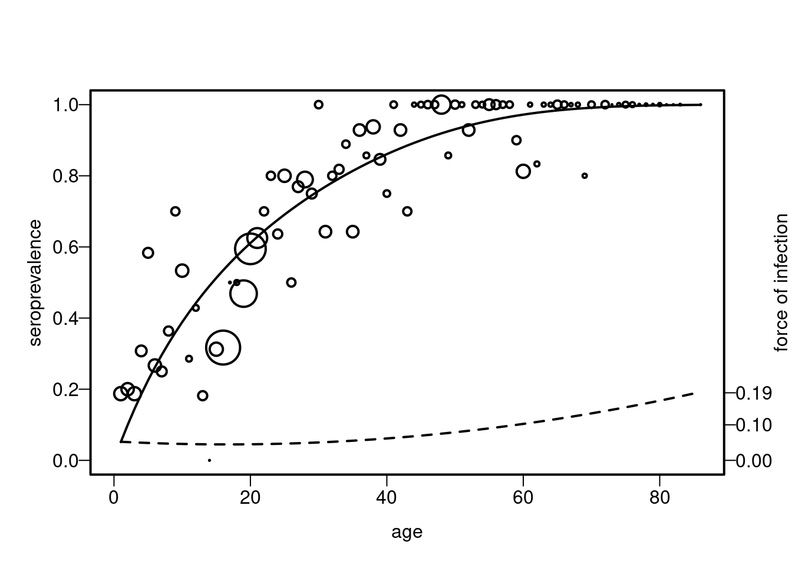
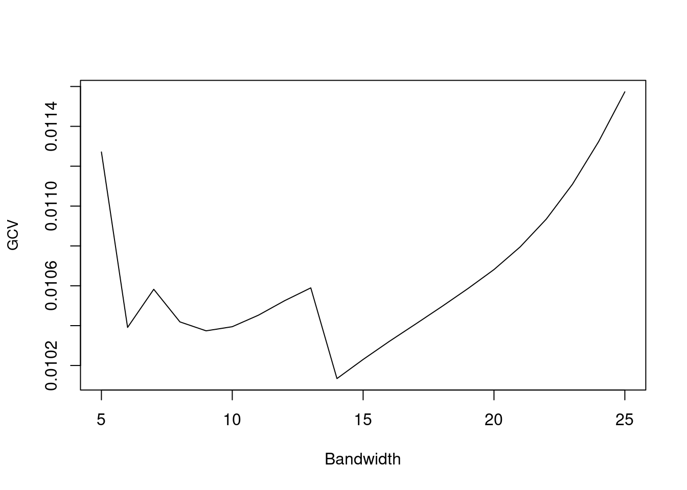

devtools::install_github("OUCRU-Modelling/serosv")
library(serosv)
library(tidyverse)serosv package
Install package “serosv”
Section 3.1.3 The Basic Model in R
Let us consider a population of size N = 5,000 with S(0) = 4,999, I(0) = 1, and R(0) = 0. We assume \(v^{-1}\) = 1 year, a life expectancy \(\mu^{−1}\) of 75 years, \(\mu\) = 1/75, and \(\beta\) = 0.0005.
Function in the package
state <- c(S=4999, I=1, R=0)
parameters <- c(
mu=1/75, # 1 divided by life expectancy (75 years old)
alpha=0, # no disease-related death
beta=0.0005, # transmission rate
nu=1, # 1 year for infected to recover
p=0 # no vaccination at birth
)
times <- seq(0, 250, by=0.1)
sir <- sir_basic_model(times, state, parameters) time S I R
1 0.0 4999.000 1.000000 0.0000000
2 0.1 4998.732 1.160221 0.1077427
3 0.2 4998.421 1.346094 0.2326044
4 0.3 4998.061 1.561716 0.3773237
5 0.4 4997.643 1.811844 0.5450805
6 0.5 4997.158 2.101986 0.7395605Code in the book
SIR<-function(t,state,parameters)
{
with(as.list(c(state, parameters)),
{
dX <- N*mu*(1-p)-beta*Y*X - mu*X
dY <- beta*Y*X - (nu+alpha+mu)*Y
dZ <- N*mu*p+nu*Y -mu*Z
list(c(dX, dY, dZ))
})
}
parameters <- c(mu=1/75,beta=0.0005,nu=1,N=5000,p=0,alpha=0)
state <- c(X=4999,Y=1,Z=0)
times<-seq(0,250,by=0.1)
require(deSolve)
res.scen1 <-as.data.frame(ode(y=state,times=times,func=SIR,parms=parameters)) time X Y Z
1 0.0 4999.000 1.000000 0.0000000
2 0.1 4998.732 1.160221 0.1077427
3 0.2 4998.421 1.346094 0.2326044
4 0.3 4998.061 1.561716 0.3773237
5 0.4 4997.643 1.811844 0.5450805
6 0.5 4997.158 2.101986 0.7395605Section 3.1.5 The Basic SIR Model with Vaccination in R
For a population of size 5,000, \(\beta\) = 0.0005, ν = 1 \(year^{−1}\) , life expectancy of 75 years, and vaccination coverage of 20% of newborns
state <- c(S=4999, I=1, R=0)
parameters <- c(
mu=1/75, # 1 divided by life expectancy (75 years old)
alpha=0, # no disease-related death
beta=0.0005, # transmission rate
nu=1, # 1 year for infected to recover
p=0.2 # 20% population vaccination at birth
)
times <- seq(0,800,by=0.01)
sir_vaccine <- sir_basic_model(times, state, parameters)
head(sir_vaccine) time S I R
1 0.00 4999.000 1.000000 0.0000000
2 0.01 4998.842 1.014973 0.1433986
3 0.02 4998.683 1.030168 0.2869290
4 0.03 4998.524 1.045591 0.4305933
5 0.04 4998.364 1.061243 0.5743935
6 0.05 4998.205 1.077129 0.7183323SIR<-function(t,state,parameters)
{
with(as.list(c(state, parameters)),
{
dX <- N*mu*(1-p)-beta*Y*X - mu*X
dY <- beta*Y*X - v*Y - mu*Y
dZ <- v*Y -mu*Z+N*mu*p
list(c(dX, dY, dZ))
})
}
parameters <- c(mu=1/75,beta=0.0005,v=1,p=0.2)
state <- c(X=4999,Y=1,Z=0)
times<-seq(0,800,by=0.01)
N<-5000
outp02 <- as.data.frame(ode(y=state,times=times,func=SIR,parms=parameters))
head(outp02) time X Y Z
1 0.00 4999.000 1.000000 0.0000000
2 0.01 4998.842 1.014973 0.1433986
3 0.02 4998.683 1.030168 0.2869290
4 0.03 4998.524 1.045591 0.4305933
5 0.04 4998.364 1.061243 0.5743935
6 0.05 4998.205 1.077129 0.7183323Section 3.2.2 The SIR Model with Constant Force of Infection at Endemic State in R
We assume that the duration in the infected class is 10 days, which means that ν = 1/10 \(days^{−1}\) or 1/(10/365) = 36.5 \(years^{−1}\) .
state <- c(s=0.99,i=0.01,r=0)
parameters <- c(
lambda = 0.05,
nu=1/(14/365) # 2 weeks to recover
)
ages<-seq(0, 90, by=0.01)
static <- sir_static_model(ages, state, parameters)
head(static) time s i r
1 0.00 0.9900000 0.010000000 0.000000000
2 0.01 0.9895051 0.008139822 0.002355054
3 0.02 0.9890105 0.006708036 0.004281469
4 0.03 0.9885161 0.005603950 0.005879937
5 0.04 0.9880220 0.004752794 0.007225227
6 0.05 0.9875281 0.004096558 0.008375351SIR<-function(t,state,parameters)
{
with(as.list(c(state, parameters)),
{
ds <- -lambda*s
di <- lambda*s - nu*i
dr <- nu*r
list(c(ds, di, dr))
})
}
## define parameters
parameters <- c(lambda = 0.05, nu=1/(14/365))
state <- c(s=0.99,i=0.01,r=0)
times<-seq(0,90,by=0.01)
require(deSolve)
out <- as.data.frame(ode(y=state,times=times,func=SIR,parms=parameters))
head(out) time s i r
1 0.00 0.9900000 0.010000000 0
2 0.01 0.9895051 0.008139812 0
3 0.02 0.9890105 0.006708034 0
4 0.03 0.9885161 0.005603956 0
5 0.04 0.9880220 0.004752798 0
6 0.05 0.9875281 0.004096561 0Section 3.4 Models with Maternal Antibodies and Latent Periods
mseir <- mseir_model(
a=seq(from=1,to=40,length=500), # age range from 0 -> 20 yo
gamma=1/0.5, # 6 months in the maternal antibodies
lambda=0.2, # 5 years in the susceptible class
sigma=26.07, # 14 days in the latent class
nu=36.5 # 10 days in the infected class
)
head(mseir) a m s e i r
1 0.000000 1.00000000 0.0000000 0.000000000 0.000000000 0.0000000
2 1.000000 0.13533528 0.7593283 0.005783403 0.004106717 0.0954463
3 1.078156 0.11575115 0.7669792 0.005855132 0.004165007 0.1072495
4 1.156313 0.09900101 0.7717001 0.005902389 0.004204740 0.1191917
5 1.234469 0.08467475 0.7739432 0.005928933 0.004228760 0.1312243
6 1.312625 0.07242161 0.7740950 0.005937978 0.004239494 0.1433059Function này em viết để plot do bên sách viết thẳng ra plot luôn,nên nếu a thấy cần a push lên package nha a
plot_mseir <- function(model){
a <- model$a
m <- model$m
s <- model$s
e <- model$e
i <- model$i
r <- model$r
plot(a,m,type="l",xlab="Age",ylab="M(a)",pch=0.5,xlim=c(0,max(a)))
title("a:Proportion of host with maternal antibodies",adj=0,cex=0.35)
plot(a,s,type="l",xlab="Age",ylab="S(a)",pch=0.5,xlim=c(0,max(a)))
title("b:Proportion of susceptibles",adj=0,cex=0.35)
plot(a,e,type="l",xlab="Age",ylab="E(a)",pch=0.5,xlim=c(0,max(a)))
title("c:Proportion of host in the latent class",adj=0,cex=0.35)
plot(a,i,type="l",xlab="Age",ylab="I(a)",pch=0.5,xlim=c(0,max(a)))
title("d:Proportion of infected",adj=0,cex=0.35)
plot(a,r,type="l",xlab="Age",ylab="R(a)",pch=0.5,xlim=c(0,max(a)))
title("e:Proportion host in the immune class",adj=0,cex=0.35)
plot(a,(m+r+i),type="l",xlab="Age",ylab="seroprevalence",pch=0.5,xlim=c(0,max(a)))
title("f:Proportion of sero-positive",adj=0,cex=0.35)
}plot_mseir(mseir)

epi11<- function(last.age,d,lambda,sigma,ni)
{
#d <- (1/0.5)
#lambda <- (1/5)
#sigma <- (34.76)
#ni <- (31.74)
N0 <- 1000
a <- seq(from=1,to=last.age,length=500)
la <- 1
N1a <- N0*la
ia <- exp(-d*a)
kk1 <- (d/(d-lambda))
kk2 <- (exp(-lambda*a)-exp(-d*a))
xa <- (d/(d-lambda))*(exp(-lambda*a)-exp(-d*a))
#browser()
ha <- (
(lambda*d)/(d-lambda)
)*
(
((exp(-sigma*a)-exp(-lambda*a))/(lambda-sigma))
-((exp(-sigma*a)-exp(-d*a))/(d-sigma))
)
ya <- (sigma*lambda*d)*
(
((exp(-ni*a)-exp(-sigma*a))/((lambda-sigma)*(d-sigma)*(sigma-ni)))
+((exp(-ni*a)-exp(-lambda*a))/((lambda-d)*(lambda-sigma)*(lambda-ni)))
+((exp(-ni*a)-exp(-d*a))/((d-lambda)*(d-sigma)*(d-ni)))
)
a <- c(0,a)
ia <- c(1,ia)
xa <- c(0,xa)
ha <- c(0,ha)
ya <- c(0,ya)
za <- 1 - ia - xa - ha -ya
plot(a,ia,type="l",xlab="Age",ylab="M(a)",pch=0.5,xlim=c(0,last.age))
title("a:Proportion of host with maternal antibodies",adj=0,cex=0.35)
plot(a,xa,type="l",xlab="Age",ylab="S(a)",pch=0.5,xlim=c(0,last.age))
title("b:Proportion of susceptibles",adj=0,cex=0.35)
plot(a,ha,type="l",xlab="Age",ylab="E(a)",pch=0.5,xlim=c(0,last.age))
title("c:Proportion of host in the latent class",adj=0,cex=0.35)
plot(a,ya,type="l",xlab="Age",ylab="I(a)",pch=0.5,xlim=c(0,last.age))
title("d:Proportion of infected",adj=0,cex=0.35)
plot(a,za,type="l",xlab="Age",ylab="R(a)",pch=0.5,xlim=c(0,last.age))
title("e:Proportion host in the immune class",adj=0,cex=0.35)
plot(a,(ia+za+ya),type="l",xlab="Age",ylab="seroprevalence",pch=0.5,xlim=c(0,last.age))
title("f:Proportion of sero-positive",adj=0,cex=0.35)
}
epi11(40,1/0.5,0.2,26.07,36.5)


3.5.1 An SIR Model with Interacting Subpopulations
k <- 2
state <- c(
s = c(0.8, 0.8),
i = c(0.2, 0.2),
r = c( 0, 0)
)
beta_matrix <- c(
c(0.05, 0.00),
c(0.00, 0.05)
)
parameters <- list(
beta = matrix(beta_matrix, nrow=k, ncol=k, byrow=TRUE),
nu = c(1/30, 1/30),
mu = 0.001,
k = k
)
times <- seq(0,10000,by=0.5)
sir_sp <- sir_subpops_model(times, state, parameters)
head(sir_sp) time s1 s2 i1 i2 r1 r2
1 0.0 0.8000000 0.8000000 0.2000000 0.2000000 0.000000000 0.000000000
2 0.5 0.7961052 0.7961052 0.2005577 0.2005577 0.003337146 0.003337146
3 1.0 0.7922208 0.7922208 0.2010974 0.2010974 0.006681767 0.006681767
4 1.5 0.7883475 0.7883475 0.2016190 0.2016190 0.010033558 0.010033558
5 2.0 0.7844854 0.7844854 0.2021224 0.2021224 0.013392251 0.013392251
6 2.5 0.7806350 0.7806350 0.2026075 0.2026075 0.016757489 0.016757489state <- c(Y1=0.8,Y2=0.2,Y3=0,Y4=0.8,Y5=0.2,Y6=0)
times<-seq(0,10000,by=0.01)
SIRtwo<-function(t,state,parameters)
{
with(as.list(c(state, parameters)),
{
dY1 <- -(beta11*Y2+beta12*Y5)*Y1+mu-mu*Y1
dY2 <- (beta11*Y2+beta12*Y5)*Y1-v1*Y2-mu*Y2
dY3 <- v1*Y2 - mu*Y3
dY4 <- -(beta21*Y2+beta22*Y5)*Y4+mu-mu*Y4
dY5 <- (beta21*Y2+beta22*Y5)*Y4-v2*Y5-mu*Y5
dY6 <- v2*Y5-mu*Y6
list(c(dY1,dY2,dY3,dY4,dY5,dY6))
})
}
times<-seq(0,10000,by=0.5)
require(deSolve)
parameters <- c(beta11=0.05,beta12=0.00,beta21=0.00,beta22=0.05,v1=1/30,v2=1/30,mu=0.001)
out <- as.data.frame(ode(y=state,times=times,func=SIRtwo,parms=parameters))
head(out) time Y1 Y2 Y3 Y4 Y5 Y6
1 0.0 0.8000000 0.2000000 0.000000000 0.8000000 0.2000000 0.000000000
2 0.5 0.7961052 0.2005577 0.003337146 0.7961052 0.2005577 0.003337146
3 1.0 0.7922208 0.2010974 0.006681767 0.7922208 0.2010974 0.006681767
4 1.5 0.7883475 0.2016190 0.010033558 0.7883475 0.2016190 0.010033558
5 2.0 0.7844854 0.2021224 0.013392251 0.7844854 0.2021224 0.013392251
6 2.5 0.7806350 0.2026075 0.016757489 0.7806350 0.2026075 0.0167574896.1.1 Polynomial Models
Function của em chưa push được lên github
Setup data
a <- hav_bg_1964
neg <- a$tot -a$pos
pos <- a$pos
age <- a$age
tot <- a$totmuench_model<- polynomial_model(age,pos,neg,k =1)
muench_model$info
Call: glm(formula = age(k), family = binomial(link = "log"), data = df)
Coefficients:
Age
-0.0505
Degrees of Freedom: 83 Total (i.e. Null); 82 Residual
Null Deviance: Inf
Residual Deviance: 97.28 AIC: 219.2
$sp
1 2 3 4 5 6 7
0.04924645 0.09606768 0.14058313 0.18290636 0.22314532 0.26140265 0.29777594
8 9 10 11 12 13 14
0.33235798 0.36523698 0.39649680 0.42621719 0.45447395 0.48133917 0.50688138
15 16 17 18 19 20 21
0.53116572 0.55425414 0.57620554 0.59707591 0.61691849 0.63578389 0.65372024
22 23 24 25 26 27 28
0.67077329 0.68698653 0.70240133 0.71705701 0.73099095 0.74423869 0.75683402
29 30 31 32 33 34 35
0.76880908 0.78019441 0.79101906 0.80131063 0.81109537 0.82039825 0.82924300
36 37 38 39 40 41 42
0.83765218 0.84564723 0.85324855 0.86047554 0.86734663 0.87387933 0.88009033
43 44 45 46 47 48 49
0.88599545 0.89160977 0.89694761 0.90202257 0.90684761 0.91143503 0.91579654
50 51 52 53 54 55 56
0.91994326 0.92388577 0.92763413 0.93119789 0.93458615 0.93780755 0.94087031
57 58 59 60 61 62 63
0.94378223 0.94655076 0.94918294 0.95168550 0.95406482 0.95632697 0.95847771
64 65 66 67 68 69 70
0.96052253 0.96246666 0.96431504 0.96607240 0.96774321 0.96933174 0.97084205
71 72 73 74 75 76 77
0.97364318 0.97494116 0.97617522 0.97734851 0.97846401 0.97952458 0.98053293
78 79 80 81 82 83
0.98149161 0.98240308 0.98326967 0.98409358 0.98487691 0.98700296
$foi
[,1]
[1,] 0.05050039
[2,] 0.05050039
[3,] 0.05050039
[4,] 0.05050039
[5,] 0.05050039
[6,] 0.05050039
[7,] 0.05050039
[8,] 0.05050039
[9,] 0.05050039
[10,] 0.05050039
[11,] 0.05050039
[12,] 0.05050039
[13,] 0.05050039
[14,] 0.05050039
[15,] 0.05050039
[16,] 0.05050039
[17,] 0.05050039
[18,] 0.05050039
[19,] 0.05050039
[20,] 0.05050039
[21,] 0.05050039
[22,] 0.05050039
[23,] 0.05050039
[24,] 0.05050039
[25,] 0.05050039
[26,] 0.05050039
[27,] 0.05050039
[28,] 0.05050039
[29,] 0.05050039
[30,] 0.05050039
[31,] 0.05050039
[32,] 0.05050039
[33,] 0.05050039
[34,] 0.05050039
[35,] 0.05050039
[36,] 0.05050039
[37,] 0.05050039
[38,] 0.05050039
[39,] 0.05050039
[40,] 0.05050039
[41,] 0.05050039
[42,] 0.05050039
[43,] 0.05050039
[44,] 0.05050039
[45,] 0.05050039
[46,] 0.05050039
[47,] 0.05050039
[48,] 0.05050039
[49,] 0.05050039
[50,] 0.05050039
[51,] 0.05050039
[52,] 0.05050039
[53,] 0.05050039
[54,] 0.05050039
[55,] 0.05050039
[56,] 0.05050039
[57,] 0.05050039
[58,] 0.05050039
[59,] 0.05050039
[60,] 0.05050039
[61,] 0.05050039
[62,] 0.05050039
[63,] 0.05050039
[64,] 0.05050039
[65,] 0.05050039
[66,] 0.05050039
[67,] 0.05050039
[68,] 0.05050039
[69,] 0.05050039
[70,] 0.05050039
[71,] 0.05050039
[72,] 0.05050039
[73,] 0.05050039
[74,] 0.05050039
[75,] 0.05050039
[76,] 0.05050039
[77,] 0.05050039
[78,] 0.05050039
[79,] 0.05050039
[80,] 0.05050039
[81,] 0.05050039
[82,] 0.05050039
[83,] 0.05050039
$df
$df$Age
[1] 1 2 3 4 5 6 7 8 9 10 11 12 13 14 15 16 17 18 19 20 21 22 23 24 25
[26] 26 27 28 29 30 31 32 33 34 35 36 37 38 39 40 41 42 43 44 45 46 47 48 49 50
[51] 51 52 53 54 55 56 57 58 59 60 61 62 63 64 65 66 67 68 69 70 72 73 74 75 76
[76] 77 78 79 80 81 82 83 86
$df$Pos
[1] 3 3 3 4 7 4 3 4 7 8 2 3 2 0 5 13 1 3 15 22 15 7 8 7 12
[26] 5 10 15 9 9 9 8 9 8 9 13 6 15 11 6 8 13 7 5 7 9 9 22 6 10
[51] 6 13 8 7 13 11 8 8 9 13 5 5 5 5 10 8 4 5 4 8 9 1 4 7 6
[76] 2 3 2 4 1 1 2 1
$df$Tot
[1] 16 15 16 13 12 15 12 11 10 15 7 7 11 1 16 41 2 6 32 37 24 10 10 11 15
[26] 10 13 19 12 9 14 10 11 9 14 14 7 16 13 8 8 14 10 5 7 9 9 22 7 10
[51] 6 14 8 7 13 11 8 8 10 16 5 6 5 5 10 8 4 5 5 8 9 1 4 7 6
[76] 2 3 2 4 1 1 2 1
attr(,"class")
[1] "polynomial_model"plot(muench_model)gf_model <- polynomial_model(age,pos,neg,type = "Griffith")
plot(gf_model)grf_model <- polynomial_model(age,pos,neg,type = "Grenfell")
plot(grf_model)
model1 <- glm(cbind(tot-pos,pos)~-1+age,family=binomial(link="log"))
summary(model1)
Call:
glm(formula = cbind(tot - pos, pos) ~ -1 + age, family = binomial(link = "log"))
Coefficients:
Estimate Std. Error z value Pr(>|z|)
age -0.050500 0.002457 -20.55 <2e-16 ***
---
Signif. codes: 0 '***' 0.001 '**' 0.01 '*' 0.05 '.' 0.1 ' ' 1
(Dispersion parameter for binomial family taken to be 1)
Null deviance: Inf on 83 degrees of freedom
Residual deviance: 97.275 on 82 degrees of freedom
AIC: 219.19
Number of Fisher Scoring iterations: 5model3<-glm(cbind(tot-pos,pos)~-1+age+I(age^2),
family=binomial(link="log"))
summary(model3)
Call:
glm(formula = cbind(tot - pos, pos) ~ -1 + age + I(age^2), family = binomial(link = "log"))
Coefficients:
Estimate Std. Error z value Pr(>|z|)
age -0.0442616 0.0053697 -8.243 <2e-16 ***
I(age^2) -0.0001889 0.0001491 -1.266 0.205
---
Signif. codes: 0 '***' 0.001 '**' 0.01 '*' 0.05 '.' 0.1 ' ' 1
(Dispersion parameter for binomial family taken to be 1)
Null deviance: Inf on 83 degrees of freedom
Residual deviance: 95.445 on 81 degrees of freedom
AIC: 219.36
Number of Fisher Scoring iterations: 6model4<-glm(cbind(tot-pos,pos)~-1+age+I(age^2)+I(age^3),
family=binomial(link="log"))
summary(model4)
Call:
glm(formula = cbind(tot - pos, pos) ~ -1 + age + I(age^2) + I(age^3),
family = binomial(link = "log"))
Coefficients:
Estimate Std. Error z value Pr(>|z|)
age -5.326e-02 1.032e-02 -5.159 2.49e-07 ***
I(age^2) 5.065e-04 6.508e-04 0.778 0.436
I(age^3) -1.019e-05 9.149e-06 -1.114 0.265
---
Signif. codes: 0 '***' 0.001 '**' 0.01 '*' 0.05 '.' 0.1 ' ' 1
(Dispersion parameter for binomial family taken to be 1)
Null deviance: Inf on 83 degrees of freedom
Residual deviance: 93.797 on 80 degrees of freedom
AIC: 219.72
Number of Fisher Scoring iterations: 8par(las=1,cex.axis=1.1,cex.lab=1.1,lwd=3,mgp=c(2, 0.5, 0),mar=c(4.1,4.1,4.1,3))
plot(age,pos/tot,cex=0.1*tot,xlab="age",xlim=c(0,86),ylim=c(0,1),ylab="seroprevalence")
lines(age,1-model1$fitted.values,lwd=2)
lines(age,1-model3$fitted.values,lwd=2,lty=2)
lines(age,1-model4$fitted.values,lwd=2,lty=3)
X<--matrix(rep(1,length(age)))
lines(age,5*X%*%model1$coefficients,lwd=2)
X<--cbind(rep(1,length(age)),2*age)
lines(age,5*X%*%model3$coefficients,lwd=2,lty=2)
X<--cbind(rep(1,length(age)),2*age,3*age^2)
lines(age,5*X%*%model4$coefficients,lwd=2,lty=3)
axis(side=4,at=c(0.0,0.2,0.4),labels=c(0.00,0.04,0.08))
mtext(side=4,"force of infection", las=3,line=2)Section 6.1.2 Nonlinear Models
Farrington model
setup data
rb <- rubella_uk_1986_1987
pos <- rb$pos
tot <- rb$tot
age <- rb$agefarrington_md <- suppressWarnings(farrington_model(
age, pos, tot,
start=list(alpha=0.07,beta=0.1,gamma=0.03)
))
farrington_md$info
Call:
mle(minuslogl = farrington, start = start, fixed = fixed)
Coefficients:
alpha beta gamma
0.07034904 0.20243950 0.03665599
$sp
[1] 0.06981359 0.16285202 0.26577188 0.36501247 0.45396891 0.53045123
[7] 0.59466144 0.64788711 0.69176392 0.72790667 0.75775202 0.78251175
[13] 0.80317827 0.82055099 0.83526820 0.84783760 0.85866263 0.86806422
[19] 0.87629830 0.88356960 0.89004242 0.89584913 0.90109678 0.90587225
[25] 0.91024632 0.91427684 0.91801129 0.92148875 0.92474154 0.92779645
[31] 0.93067580 0.93339825 0.93597948 0.93843273 0.94076924 0.94299858
[37] 0.94512899 0.94716758 0.94912054 0.95099329 0.95279062 0.95451678
[43] 0.95617556 0.95777042
$foi
[1] 0.08748800 0.12058173 0.13983845 0.14921833 0.15169476 0.14948302
[7] 0.14421828 0.13709384 0.12896815 0.12044747 0.11194949 0.10375207
[13] 0.09603044 0.08888554 0.08236531 0.07648076 0.07121788 0.06654645
[19] 0.06242645 0.05881265 0.05565789 0.05291529 0.05053974 0.04848881
[25] 0.04672331 0.04520750 0.04390916 0.04279949 0.04185294 0.04104700
[31] 0.04036191 0.03978045 0.03928765 0.03887053 0.03851792 0.03822017
[37] 0.03796902 0.03775738 0.03757922 0.03742937 0.03730344 0.03719769
[43] 0.03710895 0.03703455
$df
$df$age
[1] 1.5 2.5 3.5 4.5 5.5 6.5 7.5 8.5 9.5 10.5 11.5 12.5 13.5 14.5 15.5
[16] 16.5 17.5 18.5 19.5 20.5 21.5 22.5 23.5 24.5 25.5 26.5 27.5 28.5 29.5 30.5
[31] 31.5 32.5 33.5 34.5 35.5 36.5 37.5 38.5 39.5 40.5 41.5 42.5 43.5 44.5
$df$pos
[1] 31 30 34 57 95 104 90 96 134 110 111 147 138 141 53 49 73 69 97
[20] 65 74 84 82 79 90 84 81 72 71 51 45 45 35 39 36 37 37 37
[39] 28 26 25 21 18 18
$df$tot
[1] 206 146 168 189 219 195 164 145 180 160 148 178 177 165 67 58 81 79 111
[20] 76 82 101 88 85 94 91 89 76 79 56 52 48 37 41 40 38 39 41
[39] 30 27 25 22 19 18
attr(,"class")
[1] "farrington_model"plot(farrington_md)
farrington=function(alpha,beta,gamma)
{
p=1-exp((alpha/beta)*age*exp(-beta*age)
+(1/beta)*((alpha/beta)-gamma)*(exp(-beta*age)-1)-gamma*age)
ll=pos*log(p)+(tot-pos)*log(1-p)
#alternative definition of the log-likelihood
ll=sum(log(dbinom(pos,tot,prob=p)))
return(-sum(ll))
}
library(stats4)
model5=suppressWarnings(mle(farrington,start=list(alpha=0.07,beta=0.1,gamma=0.03)))
summary(model5)Maximum likelihood estimation
Call:
mle(minuslogl = farrington, start = list(alpha = 0.07, beta = 0.1,
gamma = 0.03))
Coefficients:
Estimate Std. Error
alpha 0.07034904 0.005429317
beta 0.20243950 0.026093340
gamma 0.03665599 0.014751768
-2 log L: 224.6971 AIC(model5)[1] 230.6971Weibull model
setup data
hcv <- hcv_be_2006[order(hcv_be_2006$dur), ]
dur <- hcv$dur
infected <- hcv$seropositiveỞ đây có code em fix lại a check rồi push lên github nha a
wb_md <- weibull_model(
t= dur ,
spos= infected
)
wb_md$info
Call: glm(formula = spos ~ log(t), family = binomial(link = "cloglog"))
Coefficients:
(Intercept) log(t)
-0.2760 0.3807
Degrees of Freedom: 420 Total (i.e. Null); 419 Residual
Null Deviance: 452.1
Residual Deviance: 419.4 AIC: 423.4
$foi
[1] 1.20236962 0.60893971 0.50957055 0.50957055 0.50957055 0.44380429
[7] 0.36032946 0.36032946 0.36032946 0.36032946 0.36032946 0.33173209
[13] 0.33173209 0.33173209 0.33173209 0.30839732 0.30839732 0.30839732
[19] 0.30839732 0.28891804 0.28891804 0.28891804 0.28891804 0.28891804
[25] 0.28891804 0.28891804 0.27235897 0.27235897 0.25807184 0.25807184
[31] 0.25807184 0.25807184 0.23457565 0.23457565 0.22476454 0.21595867
[37] 0.21595867 0.21595867 0.21595867 0.20800132 0.20800132 0.20076766
[43] 0.20076766 0.19415688 0.18808659 0.18808659 0.18808659 0.18808659
[49] 0.18808659 0.18808659 0.18808659 0.18808659 0.18808659 0.18808659
[55] 0.18248874 0.18248874 0.18248874 0.18248874 0.18248874 0.17249236
[61] 0.17249236 0.17249236 0.17249236 0.17249236 0.16800561 0.16800561
[67] 0.16800561 0.16800561 0.16800561 0.16381173 0.16381173 0.16381173
[73] 0.15988101 0.15618772 0.15618772 0.15618772 0.15618772 0.15618772
[79] 0.15270951 0.15270951 0.15270951 0.15270951 0.15270951 0.15270951
[85] 0.14942681 0.14942681 0.14942681 0.14942681 0.14942681 0.14632245
[91] 0.14632245 0.14632245 0.14632245 0.14632245 0.14632245 0.14632245
[97] 0.14632245 0.14632245 0.14632245 0.14632245 0.14632245 0.14338126
[103] 0.14338126 0.14338126 0.14058980 0.13793611 0.13793611 0.13300050
[109] 0.13300050 0.13070040 0.13070040 0.13070040 0.12850149 0.12850149
[115] 0.12850149 0.12850149 0.12850149 0.12639676 0.12639676 0.12639676
[121] 0.12639676 0.12437985 0.12244498 0.12244498 0.12244498 0.12244498
[127] 0.12244498 0.12244498 0.12244498 0.12244498 0.12244498 0.12244498
[133] 0.12244498 0.12244498 0.12244498 0.12058689 0.11880076 0.11880076
[139] 0.11880076 0.11708220 0.11708220 0.11542716 0.11229309 0.11229309
[145] 0.11229309 0.11229309 0.11229309 0.11229309 0.11080749 0.11080749
[151] 0.10937220 0.10798453 0.10664197 0.10664197 0.10664197 0.10664197
[157] 0.10664197 0.10664197 0.10664197 0.10664197 0.10664197 0.10664197
[163] 0.10664197 0.10664197 0.10664197 0.10664197 0.10534220 0.10408306
[169] 0.10408306 0.10408306 0.10286252 0.10167872 0.10167872 0.10052989
[175] 0.09941439 0.09833069 0.09833069 0.09727734 0.09525639 0.09525639
[181] 0.09525639 0.09525639 0.09525639 0.09525639 0.09525639 0.09428632
[187] 0.09334166 0.09242136 0.09152442 0.09152442 0.09064988 0.09064988
[193] 0.08979686 0.08896452 0.08896452 0.08815205 0.08815205 0.08815205
[199] 0.08735870 0.08735870 0.08735870 0.08658376 0.08658376 0.08658376
[205] 0.08658376 0.08658376 0.08658376 0.08658376 0.08658376 0.08658376
[211] 0.08658376 0.08582653 0.08508639 0.08508639 0.08436270 0.08365489
[217] 0.08296240 0.08162129 0.08097169 0.08097169 0.08033543 0.07971208
[223] 0.07971208 0.07971208 0.07971208 0.07971208 0.07971208 0.07971208
[229] 0.07971208 0.07971208 0.07971208 0.07910122 0.07850246 0.07791540
[235] 0.07733968 0.07622089 0.07622089 0.07514346 0.07514346 0.07461948
[241] 0.07410496 0.07410496 0.07410496 0.07410496 0.07410496 0.07410496
[247] 0.07410496 0.07410496 0.07410496 0.07410496 0.07310317 0.07213603
[253] 0.07213603 0.07074620 0.07029828 0.07029828 0.06942427 0.06942427
[259] 0.06942427 0.06942427 0.06942427 0.06942427 0.06942427 0.06942427
[265] 0.06942427 0.06942427 0.06942427 0.06942427 0.06942427 0.06696384
[271] 0.06696384 0.06657559 0.06619318 0.06544528 0.06544528 0.06544528
[277] 0.06544528 0.06544528 0.06544528 0.06544528 0.06544528 0.06544528
[283] 0.06544528 0.06544528 0.06544528 0.06544528 0.06544528 0.06471909
[289] 0.06266102 0.06201222 0.06201222 0.06201222 0.06201222 0.06201222
[295] 0.06201222 0.06201222 0.06201222 0.06201222 0.06201222 0.06201222
[301] 0.06201222 0.06201222 0.06169435 0.06169435 0.06138070 0.06076573
[307] 0.05987279 0.05901337 0.05901337 0.05901337 0.05901337 0.05901337
[313] 0.05901337 0.05901337 0.05901337 0.05901337 0.05901337 0.05901337
[319] 0.05901337 0.05901337 0.05901337 0.05901337 0.05738727 0.05738727
[325] 0.05661708 0.05661708 0.05636631 0.05636631 0.05636631 0.05636631
[331] 0.05636631 0.05636631 0.05636631 0.05636631 0.05636631 0.05636631
[337] 0.05636631 0.05468873 0.05468873 0.05400879 0.05400879 0.05400879
[343] 0.05400879 0.05400879 0.05400879 0.05400879 0.05400879 0.05400879
[349] 0.05400879 0.05400879 0.05292317 0.05189282 0.05189282 0.05189282
[355] 0.05189282 0.05189282 0.05189282 0.05189282 0.05189282 0.05189282
[361] 0.05189282 0.05189282 0.05189282 0.05189282 0.05189282 0.05053487
[367] 0.04998075 0.04998075 0.04998075 0.04998075 0.04998075 0.04998075
[373] 0.04998075 0.04998075 0.04998075 0.04998075 0.04874730 0.04824257
[379] 0.04824257 0.04824257 0.04824257 0.04824257 0.04824257 0.04824257
[385] 0.04824257 0.04824257 0.04824257 0.04824257 0.04824257 0.04665406
[391] 0.04665406 0.04665406 0.04665406 0.04665406 0.04519543 0.04519543
[397] 0.04519543 0.04519543 0.04519543 0.04519543 0.04464458 0.04385032
[403] 0.04385032 0.04385032 0.04385032 0.04385032 0.04385032 0.04385032
[409] 0.04385032 0.04260509 0.04260509 0.04144828 0.04144828 0.04144828
[415] 0.04144828 0.04037016 0.04037016 0.04037016 0.03936241 0.03936241
[421] 0.03936241
$sp
[1] 0.2707953 0.3811001 0.4145370 0.4145370 0.4145370 0.4416801 0.4844291
[8] 0.4844291 0.4844291 0.4844291 0.4844291 0.5019387 0.5019387 0.5019387
[15] 0.5019387 0.5176096 0.5176096 0.5176096 0.5176096 0.5317906 0.5317906
[22] 0.5317906 0.5317906 0.5317906 0.5317906 0.5317906 0.5447380 0.5447380
[29] 0.5566461 0.5566461 0.5566461 0.5566461 0.5779173 0.5779173 0.5874970
[36] 0.5964845 0.5964845 0.5964845 0.5964845 0.6049456 0.6049456 0.6129358
[43] 0.6129358 0.6205020 0.6276846 0.6276846 0.6276846 0.6276846 0.6276846
[50] 0.6276846 0.6276846 0.6276846 0.6276846 0.6276846 0.6345183 0.6345183
[57] 0.6345183 0.6345183 0.6345183 0.6472560 0.6472560 0.6472560 0.6472560
[64] 0.6472560 0.6532097 0.6532097 0.6532097 0.6532097 0.6532097 0.6589150
[71] 0.6589150 0.6589150 0.6643902 0.6696517 0.6696517 0.6696517 0.6696517
[78] 0.6696517 0.6747141 0.6747141 0.6747141 0.6747141 0.6747141 0.6747141
[85] 0.6795907 0.6795907 0.6795907 0.6795907 0.6795907 0.6842935 0.6842935
[92] 0.6842935 0.6842935 0.6842935 0.6842935 0.6842935 0.6842935 0.6842935
[99] 0.6842935 0.6842935 0.6842935 0.6888332 0.6888332 0.6888332 0.6932197
[106] 0.6974621 0.6974621 0.7055466 0.7055466 0.7094032 0.7094032 0.7094032
[113] 0.7131448 0.7131448 0.7131448 0.7131448 0.7131448 0.7167774 0.7167774
[120] 0.7167774 0.7167774 0.7203063 0.7237367 0.7237367 0.7237367 0.7237367
[127] 0.7237367 0.7237367 0.7237367 0.7237367 0.7237367 0.7237367 0.7237367
[134] 0.7237367 0.7237367 0.7270732 0.7303203 0.7303203 0.7303203 0.7334822
[141] 0.7334822 0.7365625 0.7424927 0.7424927 0.7424927 0.7424927 0.7424927
[148] 0.7424927 0.7453492 0.7453492 0.7481371 0.7508594 0.7535186 0.7535186
[155] 0.7535186 0.7535186 0.7535186 0.7535186 0.7535186 0.7535186 0.7535186
[162] 0.7535186 0.7535186 0.7535186 0.7535186 0.7535186 0.7561173 0.7586576
[169] 0.7586576 0.7586576 0.7611419 0.7635722 0.7635722 0.7659505 0.7682786
[176] 0.7705583 0.7705583 0.7727914 0.7771237 0.7771237 0.7771237 0.7771237
[183] 0.7771237 0.7771237 0.7771237 0.7792259 0.7812873 0.7833093 0.7852931
[190] 0.7852931 0.7872399 0.7872399 0.7891508 0.7910269 0.7910269 0.7928694
[197] 0.7928694 0.7928694 0.7946791 0.7946791 0.7946791 0.7964570 0.7964570
[204] 0.7964570 0.7964570 0.7964570 0.7964570 0.7964570 0.7964570 0.7964570
[211] 0.7964570 0.7982041 0.7999212 0.7999212 0.8016091 0.8032688 0.8049009
[218] 0.8080854 0.8096393 0.8096393 0.8111684 0.8126735 0.8126735 0.8126735
[225] 0.8126735 0.8126735 0.8126735 0.8126735 0.8126735 0.8126735 0.8126735
[232] 0.8141551 0.8156138 0.8170502 0.8184649 0.8212311 0.8212311 0.8239166
[239] 0.8239166 0.8252302 0.8265250 0.8265250 0.8265250 0.8265250 0.8265250
[246] 0.8265250 0.8265250 0.8265250 0.8265250 0.8265250 0.8290598 0.8315245
[253] 0.8315245 0.8350966 0.8362555 0.8362555 0.8385274 0.8385274 0.8385274
[260] 0.8385274 0.8385274 0.8385274 0.8385274 0.8385274 0.8385274 0.8385274
[267] 0.8385274 0.8385274 0.8385274 0.8449991 0.8449991 0.8460306 0.8470493
[274] 0.8490495 0.8490495 0.8490495 0.8490495 0.8490495 0.8490495 0.8490495
[281] 0.8490495 0.8490495 0.8490495 0.8490495 0.8490495 0.8490495 0.8490495
[288] 0.8510015 0.8565867 0.8583635 0.8583635 0.8583635 0.8583635 0.8583635
[295] 0.8583635 0.8583635 0.8583635 0.8583635 0.8583635 0.8583635 0.8583635
[302] 0.8583635 0.8592369 0.8592369 0.8601005 0.8617989 0.8642771 0.8666759
[309] 0.8666759 0.8666759 0.8666759 0.8666759 0.8666759 0.8666759 0.8666759
[316] 0.8666759 0.8666759 0.8666759 0.8666759 0.8666759 0.8666759 0.8666759
[323] 0.8712505 0.8712505 0.8734334 0.8734334 0.8741463 0.8741463 0.8741463
[330] 0.8741463 0.8741463 0.8741463 0.8741463 0.8741463 0.8741463 0.8741463
[337] 0.8741463 0.8789434 0.8789434 0.8809011 0.8809011 0.8809011 0.8809011
[344] 0.8809011 0.8809011 0.8809011 0.8809011 0.8809011 0.8809011 0.8809011
[351] 0.8840425 0.8870413 0.8870413 0.8870413 0.8870413 0.8870413 0.8870413
[358] 0.8870413 0.8870413 0.8870413 0.8870413 0.8870413 0.8870413 0.8870413
[365] 0.8870413 0.8910186 0.8926493 0.8926493 0.8926493 0.8926493 0.8926493
[372] 0.8926493 0.8926493 0.8926493 0.8926493 0.8926493 0.8962950 0.8977928
[379] 0.8977928 0.8977928 0.8977928 0.8977928 0.8977928 0.8977928 0.8977928
[386] 0.8977928 0.8977928 0.8977928 0.8977928 0.9025279 0.9025279 0.9025279
[393] 0.9025279 0.9025279 0.9069022 0.9069022 0.9069022 0.9069022 0.9069022
[400] 0.9069022 0.9085599 0.9109554 0.9109554 0.9109554 0.9109554 0.9109554
[407] 0.9109554 0.9109554 0.9109554 0.9147219 0.9147219 0.9182311 0.9182311
[414] 0.9182311 0.9182311 0.9215082 0.9215082 0.9215082 0.9245754 0.9245754
[421] 0.9245754
$df
t spos
1 0.1 0
2 0.3 0
3 0.4 0
4 0.4 0
5 0.4 0
6 0.5 0
7 0.7 1
8 0.7 1
9 0.7 0
10 0.7 0
11 0.7 0
12 0.8 1
13 0.8 1
14 0.8 0
15 0.8 1
16 0.9 1
17 0.9 1
18 0.9 1
19 0.9 0
20 1.0 1
21 1.0 1
22 1.0 1
23 1.0 1
24 1.0 1
25 1.0 0
26 1.0 0
27 1.1 0
28 1.1 1
29 1.2 1
30 1.2 1
31 1.2 1
32 1.2 0
33 1.4 1
34 1.4 1
35 1.5 1
36 1.6 1
37 1.6 1
38 1.6 0
39 1.6 1
40 1.7 1
41 1.7 0
42 1.8 1
43 1.8 1
44 1.9 0
45 2.0 0
46 2.0 1
47 2.0 0
48 2.0 1
49 2.0 0
50 2.0 1
51 2.0 0
52 2.0 1
53 2.0 0
54 2.0 0
55 2.1 1
56 2.1 0
57 2.1 1
58 2.1 0
59 2.1 0
60 2.3 1
61 2.3 1
62 2.3 0
63 2.3 0
64 2.3 0
65 2.4 1
66 2.4 1
67 2.4 1
68 2.4 0
69 2.4 1
70 2.5 1
71 2.5 1
72 2.5 1
73 2.6 1
74 2.7 1
75 2.7 1
76 2.7 0
77 2.7 0
78 2.7 1
79 2.8 1
80 2.8 1
81 2.8 1
82 2.8 0
83 2.8 1
84 2.8 0
85 2.9 1
86 2.9 1
87 2.9 1
88 2.9 0
89 2.9 1
90 3.0 1
91 3.0 0
92 3.0 0
93 3.0 0
94 3.0 1
95 3.0 1
96 3.0 1
97 3.0 0
98 3.0 0
99 3.0 1
100 3.0 1
101 3.0 1
102 3.1 1
103 3.1 1
104 3.1 0
105 3.2 0
106 3.3 1
107 3.3 1
108 3.5 0
109 3.5 1
110 3.6 1
111 3.6 1
112 3.6 1
113 3.7 1
114 3.7 1
115 3.7 1
116 3.7 0
117 3.7 0
118 3.8 1
119 3.8 1
120 3.8 1
121 3.8 1
122 3.9 1
123 4.0 0
124 4.0 0
125 4.0 0
126 4.0 0
127 4.0 1
128 4.0 1
129 4.0 1
130 4.0 0
131 4.0 1
132 4.0 0
133 4.0 1
134 4.0 1
135 4.0 1
136 4.1 1
137 4.2 1
138 4.2 1
139 4.2 0
140 4.3 1
141 4.3 1
142 4.4 1
143 4.6 1
144 4.6 1
145 4.6 1
146 4.6 1
147 4.6 0
148 4.6 1
149 4.7 1
150 4.7 1
151 4.8 1
152 4.9 1
153 5.0 1
154 5.0 1
155 5.0 0
156 5.0 1
157 5.0 1
158 5.0 1
159 5.0 1
160 5.0 0
161 5.0 1
162 5.0 0
163 5.0 1
164 5.0 0
165 5.0 1
166 5.0 0
167 5.1 1
168 5.2 1
169 5.2 1
170 5.2 1
171 5.3 1
172 5.4 1
173 5.4 0
174 5.5 1
175 5.6 1
176 5.7 1
177 5.7 0
178 5.8 1
179 6.0 1
180 6.0 1
181 6.0 0
182 6.0 1
183 6.0 1
184 6.0 1
185 6.0 1
186 6.1 1
187 6.2 1
188 6.3 1
189 6.4 1
190 6.4 1
191 6.5 1
192 6.5 1
193 6.6 1
194 6.7 1
195 6.7 0
196 6.8 1
197 6.8 1
198 6.8 1
199 6.9 1
200 6.9 0
201 6.9 1
202 7.0 0
203 7.0 1
204 7.0 1
205 7.0 0
206 7.0 0
207 7.0 1
208 7.0 1
209 7.0 1
210 7.0 0
211 7.0 0
212 7.1 1
213 7.2 1
214 7.2 1
215 7.3 0
216 7.4 1
217 7.5 1
218 7.7 1
219 7.8 1
220 7.8 1
221 7.9 1
222 8.0 1
223 8.0 1
224 8.0 1
225 8.0 1
226 8.0 1
227 8.0 1
228 8.0 1
229 8.0 1
230 8.0 1
231 8.0 0
232 8.1 1
233 8.2 1
234 8.3 0
235 8.4 1
236 8.6 1
237 8.6 0
238 8.8 1
239 8.8 1
240 8.9 1
241 9.0 1
242 9.0 1
243 9.0 1
244 9.0 1
245 9.0 0
246 9.0 1
247 9.0 1
248 9.0 1
249 9.0 0
250 9.0 1
251 9.2 1
252 9.4 1
253 9.4 1
254 9.7 1
255 9.8 1
256 9.8 1
257 10.0 1
258 10.0 0
259 10.0 1
260 10.0 1
261 10.0 0
262 10.0 1
263 10.0 1
264 10.0 1
265 10.0 1
266 10.0 1
267 10.0 1
268 10.0 1
269 10.0 1
270 10.6 1
271 10.6 1
272 10.7 1
273 10.8 1
274 11.0 1
275 11.0 1
276 11.0 1
277 11.0 1
278 11.0 1
279 11.0 0
280 11.0 1
281 11.0 1
282 11.0 0
283 11.0 1
284 11.0 0
285 11.0 1
286 11.0 1
287 11.0 1
288 11.2 1
289 11.8 1
290 12.0 1
291 12.0 1
292 12.0 0
293 12.0 1
294 12.0 1
295 12.0 1
296 12.0 1
297 12.0 1
298 12.0 1
299 12.0 1
300 12.0 1
301 12.0 1
302 12.0 1
303 12.1 1
304 12.1 1
305 12.2 1
306 12.4 1
307 12.7 1
308 13.0 0
309 13.0 1
310 13.0 1
311 13.0 1
312 13.0 1
313 13.0 1
314 13.0 1
315 13.0 0
316 13.0 1
317 13.0 1
318 13.0 0
319 13.0 1
320 13.0 0
321 13.0 1
322 13.0 1
323 13.6 1
324 13.6 1
325 13.9 1
326 13.9 1
327 14.0 1
328 14.0 1
329 14.0 1
330 14.0 1
331 14.0 0
332 14.0 1
333 14.0 1
334 14.0 0
335 14.0 1
336 14.0 1
337 14.0 1
338 14.7 1
339 14.7 1
340 15.0 1
341 15.0 1
342 15.0 1
343 15.0 1
344 15.0 0
345 15.0 1
346 15.0 0
347 15.0 1
348 15.0 1
349 15.0 1
350 15.0 1
351 15.5 1
352 16.0 1
353 16.0 1
354 16.0 1
355 16.0 1
356 16.0 1
357 16.0 1
358 16.0 1
359 16.0 0
360 16.0 1
361 16.0 1
362 16.0 1
363 16.0 1
364 16.0 1
365 16.0 1
366 16.7 1
367 17.0 1
368 17.0 1
369 17.0 1
370 17.0 1
371 17.0 1
372 17.0 1
373 17.0 1
374 17.0 0
375 17.0 0
376 17.0 1
377 17.7 1
378 18.0 1
379 18.0 1
380 18.0 1
381 18.0 1
382 18.0 0
383 18.0 1
384 18.0 1
385 18.0 1
386 18.0 1
387 18.0 1
388 18.0 1
389 18.0 1
390 19.0 1
391 19.0 1
392 19.0 1
393 19.0 1
394 19.0 1
395 20.0 1
396 20.0 0
397 20.0 1
398 20.0 1
399 20.0 1
400 20.0 1
401 20.4 1
402 21.0 1
403 21.0 1
404 21.0 0
405 21.0 1
406 21.0 1
407 21.0 1
408 21.0 1
409 21.0 1
410 22.0 1
411 22.0 1
412 23.0 1
413 23.0 1
414 23.0 1
415 23.0 0
416 24.0 1
417 24.0 1
418 24.0 1
419 25.0 1
420 25.0 1
421 25.0 1
attr(,"class")
[1] "weibull_model"plot(wb_md)log.d <- log(dur)
hcvfit=(glm(infected~log.d, family=binomial(link="cloglog")))
summary(hcvfit)
Call:
glm(formula = infected ~ log.d, family = binomial(link = "cloglog"))
Coefficients:
Estimate Std. Error z value Pr(>|z|)
(Intercept) -0.27596 0.14603 -1.890 0.0588 .
log.d 0.38074 0.07113 5.353 8.65e-08 ***
---
Signif. codes: 0 '***' 0.001 '**' 0.01 '*' 0.05 '.' 0.1 ' ' 1
(Dispersion parameter for binomial family taken to be 1)
Null deviance: 452.06 on 420 degrees of freedom
Residual deviance: 419.38 on 419 degrees of freedom
AIC: 423.38
Number of Fisher Scoring iterations: 4Section 6.2 Fractional Polynomial Models
Hepatitis A data from Belgium anno 1993–1994
hav <- hav_be_1993_1994
age <- hav$age
pos <- hav$pos
tot <- hav$tot
neg <- hav$neg <- hav$tot - hav$posbest_1d <- find_best_fp_powers(
age, pos, tot,
p=seq(-2,3,0.01), mc=FALSE, degree=1, link="logit"
)
best_1d$p
[1] 0.42
$deviance
[1] 114.2489
$model
Call: glm(formula = as.formula(formulate(p_cur)), family = binomial(link = link))
Coefficients:
(Intercept) I(age^0.42)
-6.519 1.444
Degrees of Freedom: 85 Total (i.e. Null); 84 Residual
Null Deviance: 1320
Residual Deviance: 114.2 AIC: 391.8best_2d_mono <- find_best_fp_powers(
age, pos, tot,
p=seq(-2,3,0.1), mc= TRUE, degree=2, link="logit"
)
best_2d_mono$p
[1] 1.0 1.6
$deviance
[1] 93.44652
$model
Call: glm(formula = as.formula(formulate(p_cur)), family = binomial(link = link))
Coefficients:
(Intercept) I(age^1) I(age^1.6)
-4.696133 0.210573 -0.009165
Degrees of Freedom: 85 Total (i.e. Null); 83 Residual
Null Deviance: 1320
Residual Deviance: 93.45 AIC: 373best_2d <- find_best_fp_powers(
age, pos, tot,
p=seq(-2,3,0.1), mc= FALSE, degree=2, link="logit"
)
best_2d$p
[1] 1.9 2.0
$deviance
[1] 79.58029
$model
Call: glm(formula = as.formula(formulate(p_cur)), family = binomial(link = link))
Coefficients:
(Intercept) I(age^1.9) I(age^2)
-3.27042 0.03275 -0.02038
Degrees of Freedom: 85 Total (i.e. Null); 83 Residual
Null Deviance: 1320
Residual Deviance: 79.58 AIC: 359.2| Fractional polynomials | Deviance | Power | AIC |
|---|---|---|---|
| First degree | 114.25 | 0.42 | 391.8 |
| Second degree without monocity | 93.45 | (1.0,1.6) | 373 |
| Second degree with monocity | 79.58 | (1.9,2.0) | 359.2 |
fp_1d<- fp_model(
age, pos, tot,
p=c(0.42), link="logit")
plot(fp_1d)fp_2d<- fp_model(
age, pos, tot,
p=c(1.0, 1.6), link="logit")
plot(fp_2d)fp_2d_mono <- fp_model(
age, pos, tot,
p=c(1.9, 2.0), link="logit")
plot(fp_2d_mono)search.fracpoly.one(y=hav$neg,tot=hav$tot,x=hav$age)$power
[1] 0.42
$deviance
[1] 114.2489
$mistake
NULLagep=hav$age^(0.42)
fitp1=glm(cbind(hav$neg,hav$tot-hav$neg)~agep,family=binomial(link="logit"))
fitlin=glm(cbind(hav$neg,hav$tot-hav$neg)~hav$age,family=binomial(link="logit"))
fitlin$deviance-fitp1$deviance[1] 35.31336search.fracpoly.two(y=hav$neg,tot=hav$tot,x=hav$age)$power
[1] 1.9 2.0
$deviance
[1] 79.58029
$mistake
[,1] [,2] [,3]
[1,] 1 -1.0 -0.9
[2,] 1 -1.0 -0.8
[3,] 1 -1.0 -0.7
[4,] 1 -0.9 -0.9
[5,] 1 -0.9 -0.8
[6,] 1 -0.9 -0.7
[7,] 1 -0.8 -0.8
[8,] 1 -0.8 -0.7
[9,] 1 -0.8 -0.6
[10,] 1 -0.7 -0.7
[11,] 1 -0.7 -0.6
[12,] 1 -0.6 -0.6model.fp1 <- glm(cbind(pos,tot-pos) ~ age, family=binomial(link="logit"))
model.fp2 <- glm(cbind(pos,tot-pos) ~ I(age^1.9) + I(age^2), family=binomial(link="logit"))
model.fp2.m <- glm(cbind(pos,tot-pos) ~ I(age) + I(age^1.6), family=binomial(link="logit"))
model.fp1
Call: glm(formula = cbind(pos, tot - pos) ~ age, family = binomial(link = "logit"))
Coefficients:
(Intercept) age
-2.95641 0.07731
Degrees of Freedom: 85 Total (i.e. Null); 84 Residual
Null Deviance: 1320
Residual Deviance: 149.6 AIC: 427.2model.fp2
Call: glm(formula = cbind(pos, tot - pos) ~ I(age^1.9) + I(age^2),
family = binomial(link = "logit"))
Coefficients:
(Intercept) I(age^1.9) I(age^2)
-3.27042 0.03275 -0.02038
Degrees of Freedom: 85 Total (i.e. Null); 83 Residual
Null Deviance: 1320
Residual Deviance: 79.58 AIC: 359.2model.fp2.m
Call: glm(formula = cbind(pos, tot - pos) ~ I(age) + I(age^1.6), family = binomial(link = "logit"))
Coefficients:
(Intercept) I(age) I(age^1.6)
-4.696133 0.210573 -0.009165
Degrees of Freedom: 85 Total (i.e. Null); 83 Residual
Null Deviance: 1320
Residual Deviance: 93.45 AIC: 373search.fracpoly.twoR(y=hav$neg,tot=hav$tot,x=hav$age,seq(-2,3,0.1),T)library(scatterplot3d)
par(las=1,cex.axis=1.1,cex.lab=1.1,lwd=3,mgp=c(2, 0.5, 0),mar=c(4.1,4.1,4.1,3))
plot(hav$age,hav$pos/hav$tot,cex=0.03*hav$tot,xlab="age",ylab="seroprevalence",xlim=c(0,86),ylim=c(-0.2,1),yaxt="n")
lines(hav$age,model.fp1$fitted.values,lwd=2)
lines(hav$age,model.fp2$fitted.values,lwd=2,lty=2)
lines(hav$age,model.fp2.m$fitted.values,lwd=2,lty=3)
model.fp1.foi<-c(foi.num(hav$age,model.fp1$fitted.values))
model.fp2.foi<-foi.num(hav$age,model.fp2$fitted.values)
model.fp2.m.foi<-foi.num(hav$age,model.fp2.m$fitted.values)
lines(model.fp1.foi$grid,4*model.fp1.foi$foi,lwd=2)
lines(model.fp2.foi$grid,4*model.fp2.foi$foi,lwd=2,lty=2)
lines(model.fp2.m.foi$grid,4*model.fp2.m.foi$foi,lwd=2,lty=3)
abline(0,0)
axis(side=4,at=c(-0.2,0.0,0.2,0.4),labels=c(-0.05,0.00,0.05,0.10))
axis(side=2,at= seq(0,1,0.2),labels=seq(0,1,0.2))
abline(0,0,lwd=2)
axis(side=4,at=c(0.0,0.2,0.4),labels=c(0.00,0.05,0.10))
axis(side=2,at=seq(0,1,0.2),labels=seq(0,1,0.2))
mtext(side=4,"force of infection", las=3,line=2)7.1.2 Local Estimation by Polynomials
Application to UK Mumps Data
mump <- mumps_uk_1986_1987
a = age <- mump$age
pos <- mump$pos
tot <- mump$tot
y <- pos/totplot_gcv(
age, pos, tot,
nn_seq = seq(0.2, 0.8, by=0.1),
h_seq = seq(5, 25, by=1)
)library(locfit)locfit 1.5-9.8 2023-06-11
Attaching package: 'locfit'The following object is masked from 'package:purrr':
nonealpha=seq(0.2,0.8, by=0.05)
res=cbind(alpha,summary(gcvplot(y~a,family="binomial",alpha=alpha)))
plot(res[,1],res[,3],type="n",xlab="% Neighbors",ylab=" ")
lines(res[,1],res[,3])
mtext(side=2,"GCV",las=3,line=2.4,cex=0.9)alpha=cbind(rep(0,length(seq(5,25, by=1))),seq(5,25, by=1))
res=cbind(alpha[,2],summary(gcvplot(y~a,family="binomial",alpha=alpha)))
plot(res[,1],res[,3],type="n",xlab="Bandwidth",ylab=" ")
lines(res[,1],res[,3])
mtext(side=2,"GCV",las=3,line=3,cex=0.9)
Fit local polynomial model
lp1 <- lp_model(age, pos, tot, kern="tcub", nn=0.7, deg=2)
plot(lp1)plot(age,y,cex=0.003*tot,pch=19,xlab="age",ylab="seroprevalence",ylim=c(-0.1,1))
lpfit<-locfit(y~a,family="binomial")
lines(a,fitted(lpfit),lty=1,lwd=2)
lpfitd1<-locfit(y~a,deriv=1,family="binomial")
lpfoi=fitted(lpfitd1)*fitted(lpfit)
lines(a,lpfoi,lty=1,lwd=2)
axis(side=4,at=c(0.0,0.1,0.2,0.3,0.4))
abline(h=0)
mtext(side=4,"force of infection", las=3,line=1.6,cex=0.9)